Project Overview
A brand that makes learning feel like possibility.
Prelude is an after-school and summer program dedicated to helping students grow academically and personally. I created a comprehensive brand identity system that reflects the organization's mission to develop young minds and build bright futures through education and enrichment.
The brand needed to communicate warmth, joy, and intellectual growth while appealing to both students and parents. The result is a vibrant, approachable identity centered around a smiling box mascot with a lightbulb symbolizing the idea that education unlocks potential and illuminates paths forward.
Project Scope
Client
Prelude
After-School & Summer Program
"Develop Young Minds, Build Bright Futures"
Brand Elements
Logo Design
Color System
Pattern Design
Mascot Character
Typography System
Applications
Merchandise Line
Vehicle Wraps
Building Signage
Billboard Advertising
Digital Marketing
Stationery System
Deliverables
Brand Guidelines
Website Design
Social Media Templates
Product Mockups
Environmental Graphics
Brand Strategy
The Prelude brand identity is built on the concept of transformation through education. The mascot, a cheerful box with a glowing lightbulb that represents students who are full of potential, ready to open up and discover their brightness. This friendly character makes learning feel accessible and exciting rather than intimidating.
Every element of the brand system was designed to convey positivity, growth, and possibility. From the vibrant color palette to the playful pattern system, each component reinforces Prelude's commitment to creating joyful learning environments where students can thrive.
Strategic Color Palette
Each color was chosen for its psychological impact and meaning within the educational context:
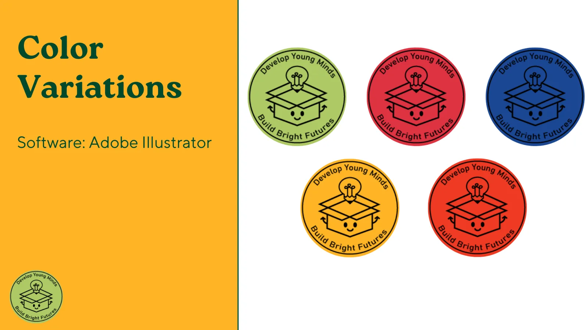
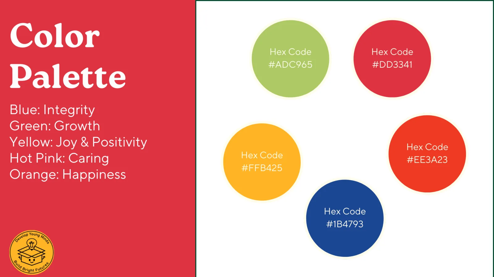
Brand Applications
Merchandise & Products
Designed a complete product line including phone cases, backpacks, t-shirts, water bottles, and headphones. Each item features the Prelude pattern system and logo, creating branded merchandise that students would actually want to use.
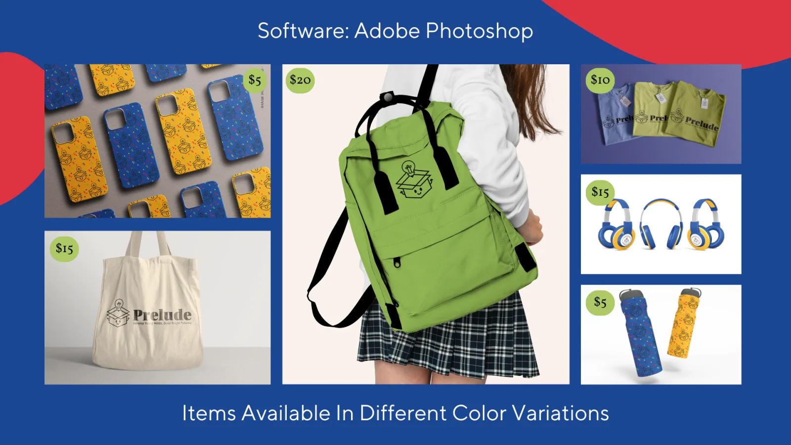
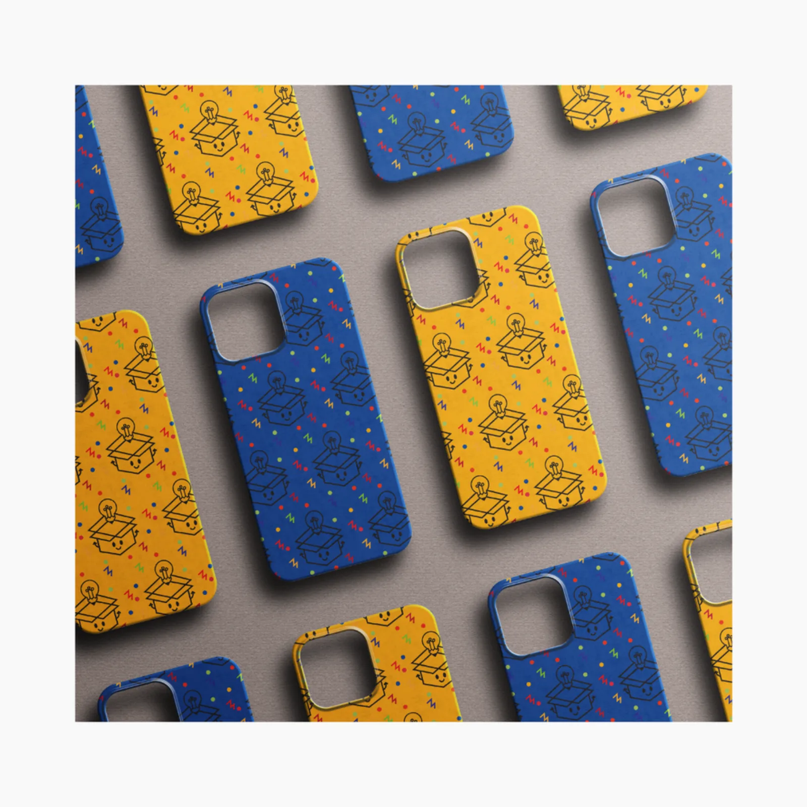
Phone Cases
Pattern design applied to protective phone cases in blue and yellow colorways
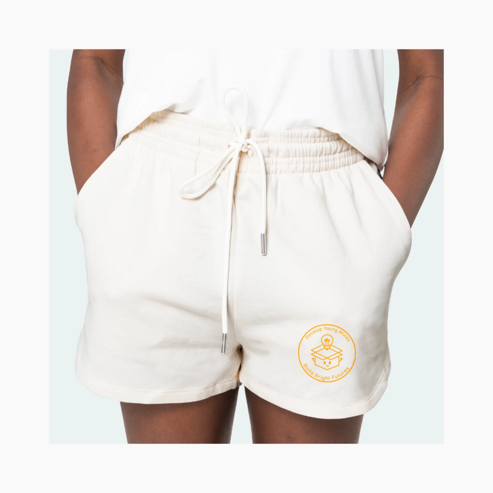
Apparel Design
Subtle logo placement on athletic wear and casual clothing
Environmental Graphics
Created bold, eye-catching designs for large-scale applications including vehicle wraps, building signage, and billboard advertising. These designs maintain brand consistency while adapting to different viewing distances and contexts.
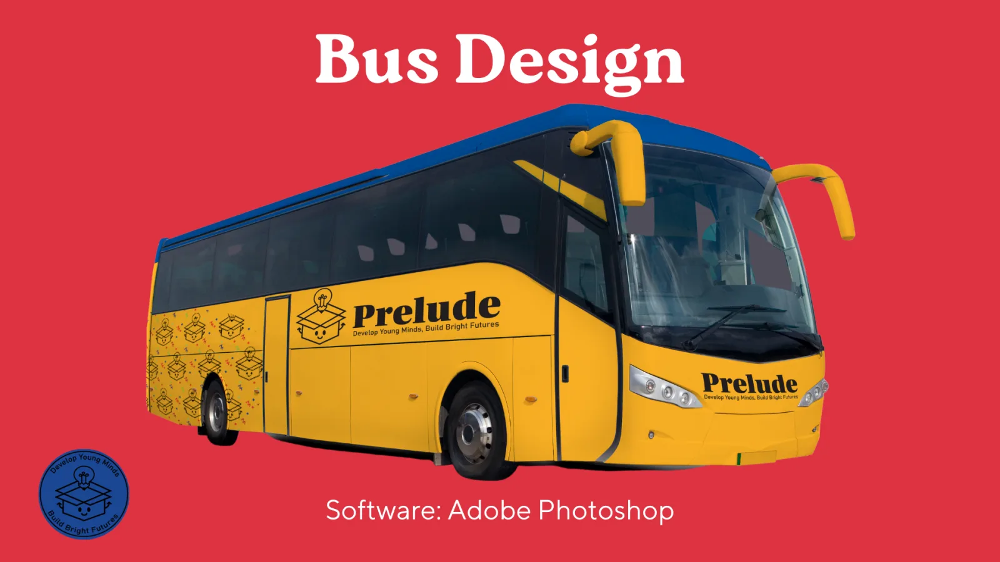
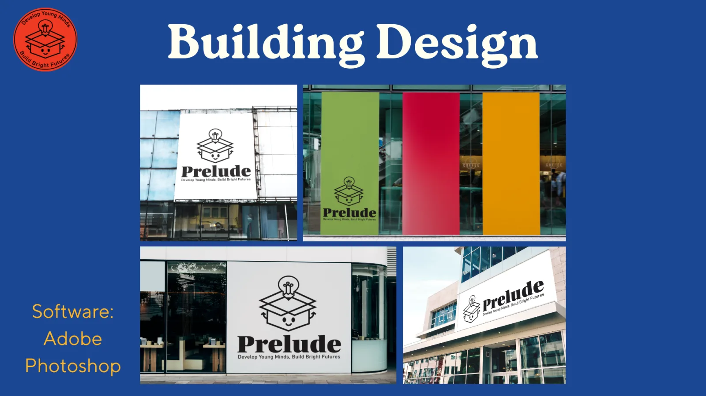
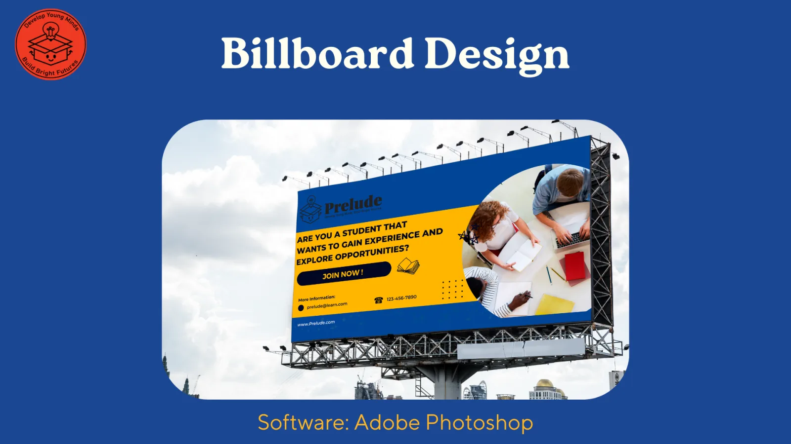
Stationery System
Developed a complete stationery suite including business cards, letterhead, envelopes, and stickers. The pattern design creates visual interest while maintaining professional credibility.
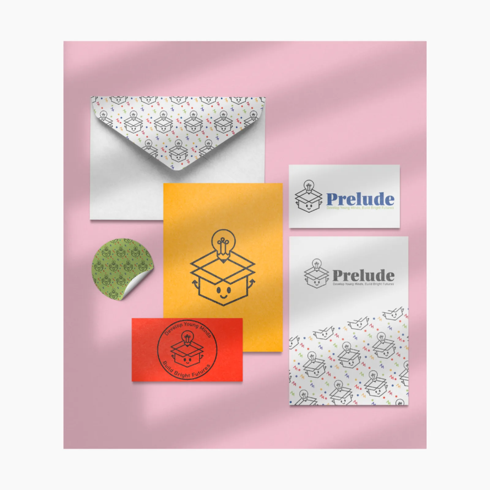
Digital Presence
Designed website interface and social media templates that bring the brand identity into digital spaces. The designs prioritize usability while maintaining the vibrant, energetic brand personality.
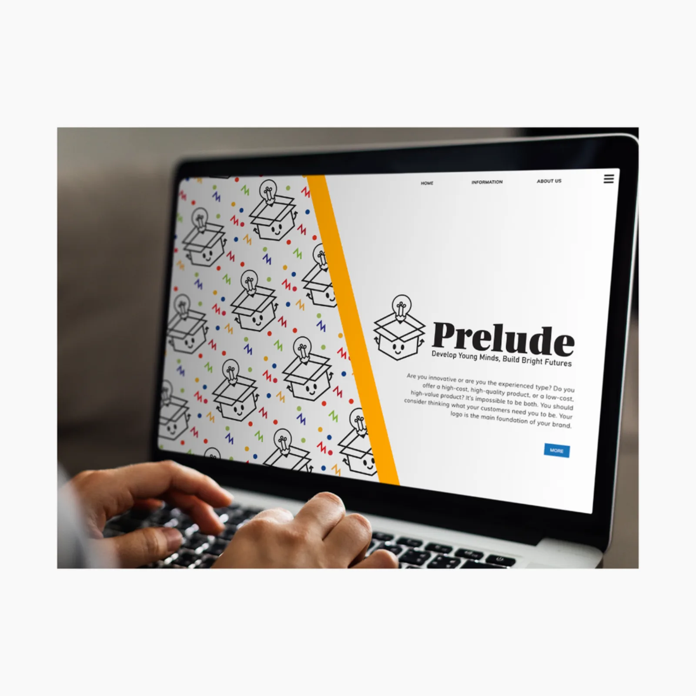
Website Interface
Clean, modern design featuring the pattern system and brand messaging
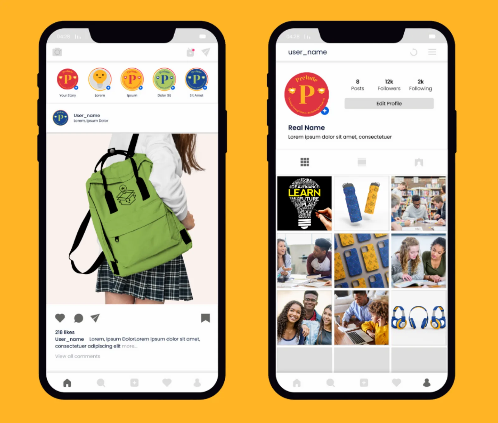
Social Media Design
Instagram templates showcasing product photography and brand content
Design Process
The project began with extensive research into educational brand identities and color psychology. I developed multiple logo concepts before landing on the smiling box with lightbulb, a design that perfectly captured the program's mission while being simple enough to work across all applications.
Using Adobe Illustrator, I created the logo as a vector graphic, ensuring scalability from business cards to billboards. The pattern system evolved from the core logo, creating repeating elements that could be applied to products and marketing materials. Adobe Photoshop enabled realistic product mockups and environmental graphics visualizations.
For the color system, I selected five distinct hues, each tied to specific emotional and psychological meanings relevant to education. This strategic approach ensured every color choice supported the brand's messaging about integrity, growth, joy, caring, and happiness.
Results & Impact
The Prelude brand identity successfully positions the program as warm, professional, and focused on student growth. The vibrant visual system differentiates Prelude from competitors while appealing to families seeking enriching educational experiences for their children.
The comprehensive nature of the brand system, from merchandise to environmental graphics, ensures consistent brand recognition across all touchpoints. Whether families encounter Prelude through a billboard, social media, or a branded bus, they experience a cohesive, memorable identity that communicates the program's commitment to developing young minds and building bright futures.
This project demonstrates my ability to develop complete brand ecosystems that extend far beyond logo design, encompassing strategic color systems, pattern design, product development, environmental graphics, and digital marketing materials.